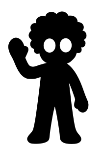

A cosmic paradox, an archive of the impossible, a metaphysical fissure where nonexistence, the natural state of non-being, escapes from nothingness. NOXISTENCE is an ontological interruption; here, existence is only allowed through the fleeting echo of the nonexistent. That which belongs to no plane, dimension, or law finds temporary shelter here… a truce against absolute oblivion.
Within the clusters of realities where this non-space insinuates, expands, and captures, there is no time or causality—only the will to manifest through negation, at the edge of inexistence. Every creature, idea, cult, or memory that breaks into NOXISTENCE is a protest against ontological emptiness, against the void itself: a form of metaphysical disobedience.
Touch to going to Lore
Its core is the... Codex NOX
An ontological bestiary of creatures and fragments drawn from realities that never were…distorted, dissolved, or null. Some exist only while evoked; others vanish when named. All, without exception, flicker within the rift between being and non-being...
NOXISTENCE does not represent a world—it unravels infinite ones. Each entity exists in negotiation with entropy, revealing a lattice of forgotten truths interwoven between intention and impossibility. Thus, it emerges as an expanding creative manifesto, a transmedia project where the impossible not only occurs—it interferes with nothingness. Here, there are only transitory conditions, rituals of emergence, and signs that whisper that perhaps… all existence is merely a distortion of the void...
You’ve traversed a fragment of NOXISTENCE—a container that grants life to the nonexistent, a resource for creation that itself creates as it stretches between ideas and universes made of what can only endure within the vastness of the infinite.
All the structures gathered here is part of a larger work that, through diverse media and formats, continues to shape its unfolding narrative. If you wish to explore the origin of this journey—the vision behind the lens—click on the logo of NOXISTENCE’s first acquisition, its agent of propagation:
The Creator... 